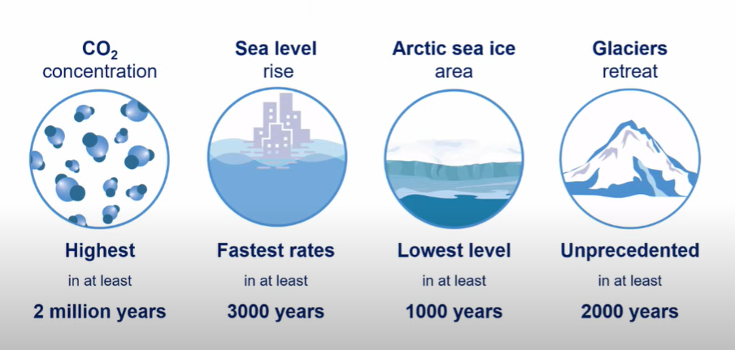

The Intergovernmental Panel on Climate Change (IPCC) released a new report, Climate Change 2021: the Physical Science Basis, which brings together the most recent advances in climate science to outline the current state of climate change. The results are grave.
The opening line of the report’s Summary for Policymakers reads: “It is unequivocal that human influence has warmed the atmosphere, ocean and land.”
The report, which was approved by 195 national governments, shows the rapid human-induced change that is occurring in our climate. The concentration of CO2 in the atmosphere is the highest it has been in 2 million years, sea level rise is at its fastest in 3000 years and arctic sea ice is at its lowest levels in at least 1000 years.
“We now have a much clearer picture of the past, present and future climate, which is essential for understanding where we are headed, what can be done, and how we can prepare,” said Valerie Masson-Delmotte, Co-Chair of Working Group I, which made this contribution to the Sixth Assessment Report.

We are already seeing the effects of human-induced climate change around the globe. Extreme weather events, from wildfires across North America and Southern Europe to extreme flooding in China and Western Europe, and devastating tropical cyclones on the Indian and Atlantic coasts, show the real life consequences of a climate that has already warmed by 1.1 °C since the mid-1800s.
The science shows that continued warming will affect the climate in multiple ways. It will bring more intense rainfall and flooding in some regions, and increased drought, heat and wild-fires in others. Increased warming will amplify the melting of glaciers and ice sheets while sea level rise also increases.
In cities, these impacts may be amplified. According to the Summary for Policymakers, urbanization increases heavy precipitation over cities, and coastal cities will continue to see exacerbated flooding both from sea level rise and “extreme rainfall/riverflow events”. Cities and urban centers are also warmer than surrounding areas – often due to lack of natural cooling influences such as water and vegetation, according to the IPCC fact sheet on urban areas.
“The Working Group I report is the clearest evidence yet that we have changed the climate system in an unprecedented way. Furthermore it shows that many of these changes are irreversible for 100s to 1000s of years. This means that cities around the world will face continued and escalating climate-related challenges such as hot extremes, heavy precipitation and rising sea levels, putting lives, ecosystems and infrastructure at risk. The Working Group II and III reports to be released early in 2022 will examine the impacts of these unprecedented changes and the options we have for ambitious and rapid action to enhance resilience and achieve net-zero CO2 emissions in order to create a safer, more sustainable and equitable world,” said Debra Roberts, IPCC Co-Chair of Working Group II.
“Today’s IPCC report on the physical science basis of climate change unfortunately reiterated with even greater certainty that human-induced climate change is now happening faster and more intensely than predicted in their Special Report on Global Warming of 1.5 °C,” said Gino Van Begin, Secretary General of ICLEI – Local Governments for Sustainability.
He continued, ”Today’s report also contains two important lessons for local and regional governments. First, using data from over 14,000 studies, the report shows region-specific changes to climate, meaning that our cities, towns and regions will have a clearer picture of what to expect in the coming decades and how to protect the lives and livelihoods of residents. Second, the findings reinforce how critical it is to achieve net zero emissions as soon as possible.”